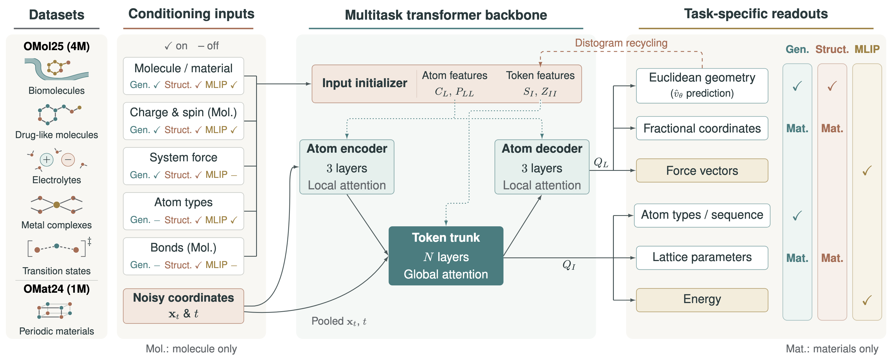
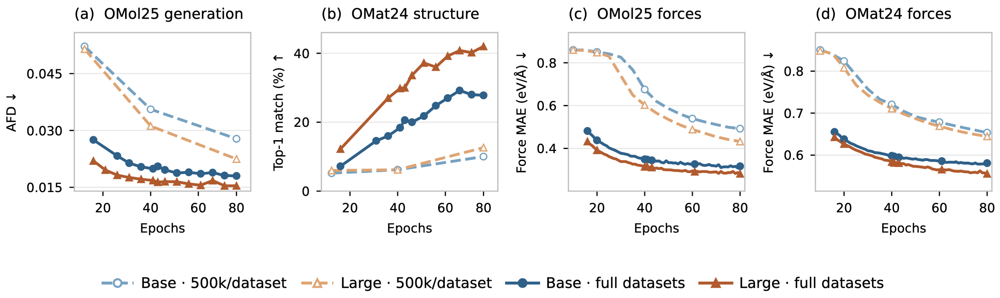
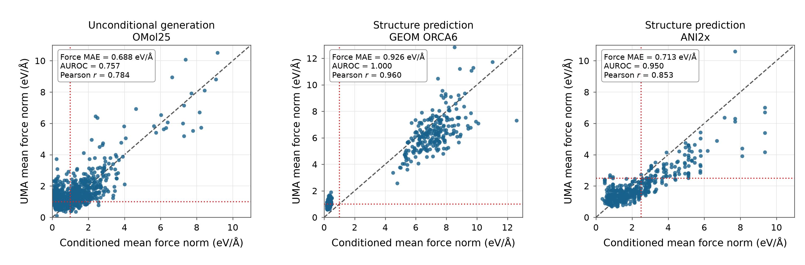
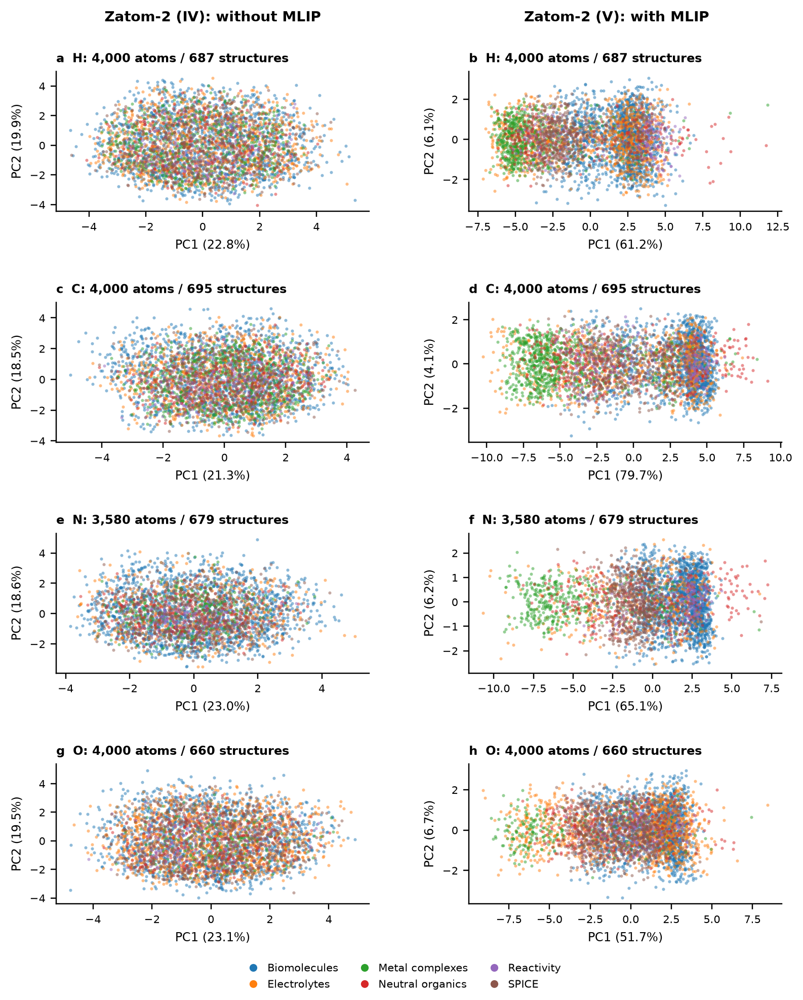
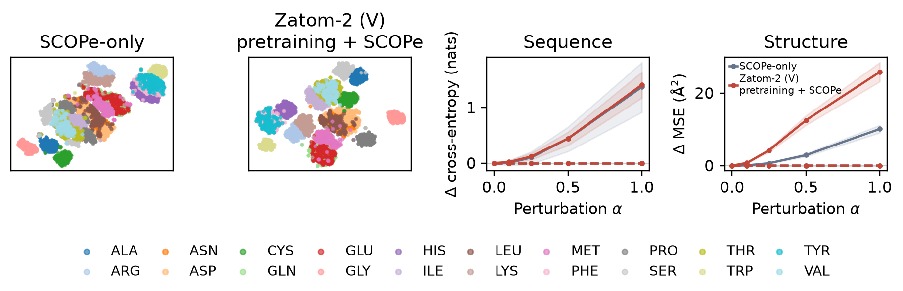
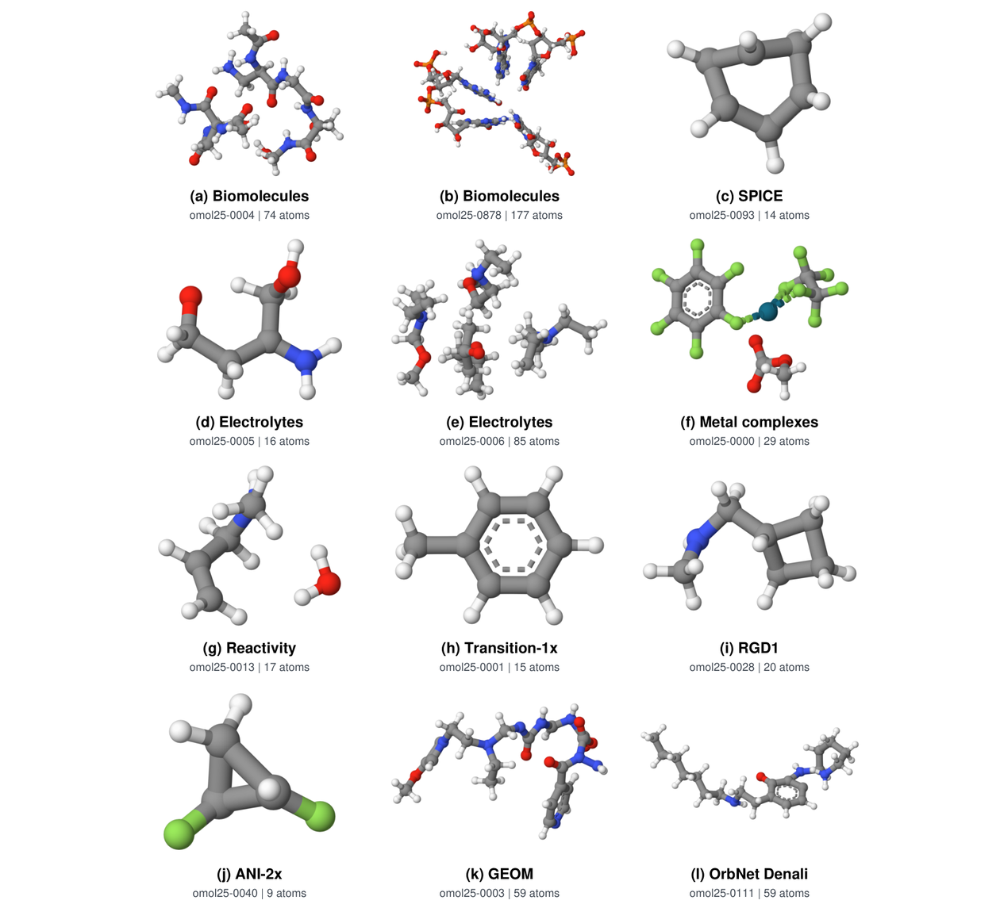
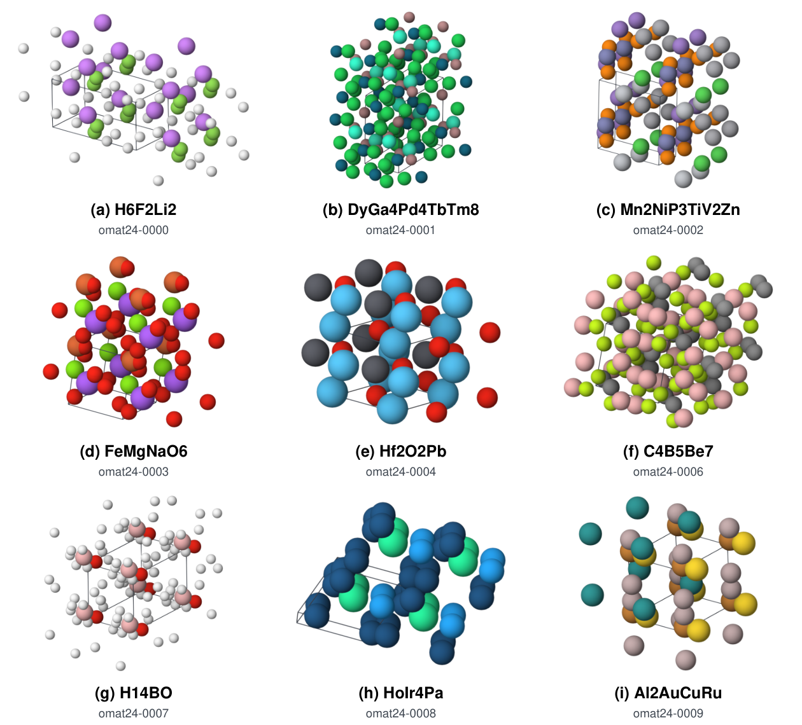
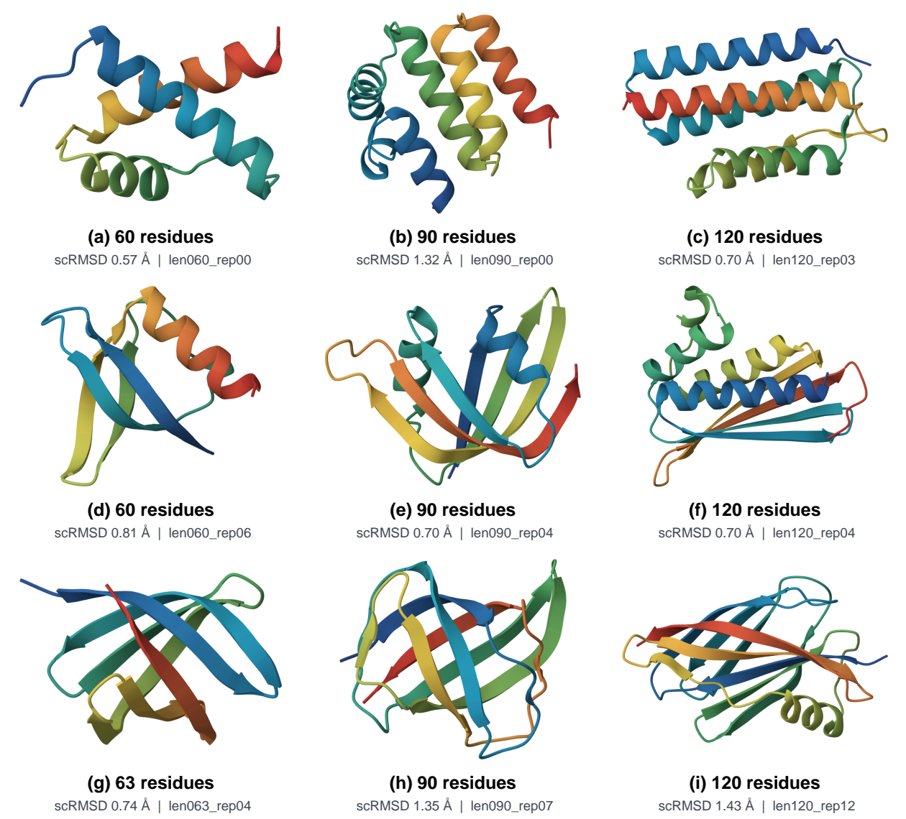

Click outside or press Esc to close
Interactive 3D visualization of denoising flow matching sample trajectories generated by Zatom-2.
Flow matching generation of a biomolecule sampled from the OMol25 distribution. Starting from Gaussian coordinate noise at t = 0, Zatom-2 transports mass along continuous velocity fields to form stable chemical valence at t = 1.
Checkpoint: paper-table1-omol25-omat24-joint-properties-force-conditioned
Atomistic machine learning models are typically tailored to specific domains, such as small molecules, crystals, or proteins. In this work, we introduce Zatom-2, a unified atomistic generative model across these domains. Uniquely, Zatom-2 is pretrained on the large-scale OMol25 and OMat24 datasets using a multitask objective that combines flow matching generation and structure prediction with auxiliary machine learning interatomic potential (MLIP) tasks predicting energies and forces.
This multitask pretraining leverages the rich geometric information in quantum-chemical calculations to shape the model's internal representations. In generation benchmarks, Zatom-2 establishes strong performance on QM9, GEOM-Drugs, MP20, OMat24, and OMol25. When transferring to proteins with as few as 2,000 training examples, Zatom-2 generates designable backbones and shows strong extrapolation to sequence lengths beyond the training distribution, where domain-specific models struggle. Furthermore, we demonstrate that conditioning on atomic forces enables control over the degree of geometric relaxation in generated structures. Through comprehensive analysis of internal representations, scaling behavior, and generation quality, our results show that joint pretraining across molecular and materials data improves generative modeling and representation transfer, pointing toward general-purpose generative models for atomistic systems.
Employs a unified atom1 + atom14 tokenization scheme within a single Transformer architecture, supporting small molecules, periodic inorganic crystals, and all-atom protein structures under standardized coordinate diffusion.
Pretrained on over 5 million high-fidelity DFT calculations from OMol25 (4M) and OMat24 (1M), uniting generative flow matching with structure prediction and auxiliary MLIP energy and force regression to learn physics-informed geometric representations.
Introduces conditioning on atomic force magnitudes, providing direct user control over the geometric relaxation state of generated structures without expensive post-hoc DFT minimization or external relaxation oracles.
Transfers molecular and materials representations to de novo protein design with as few as 2,000 training examples, yielding high self-consistency designability (scRMSD < 1.5 Å) and unprecedented extrapolation to unseen sequence lengths.

Figure 1: Zatom-2 multitask pretraining across domains. Zatom-2 is jointly trained on OMol25 (molecules) and OMat24 (periodic materials) using a multitask curriculum combining generative flow matching, structure prediction, and auxiliary MLIP prediction of energies and forces. Clean coordinates, noisy diffusion states, or corrupted configurations enter a multiscale Transformer backbone with unified atom1 and atom14 tokenization. Domain- and task-specific heads map internal geometric latents to continuous 3D coordinates and lattice parameters, scalar potential energies, vector atomic forces, and discrete atom types.
Zatom-2 parameterizes generative modeling through continuous flow matching between a standard Gaussian prior at $t=0$ and clean atomistic geometries at $t=1$:
The network learns a normalized Cartesian velocity field $\widehat{\mathbf{v}}_\theta(\mathbf{x}_t, t)$ via the objective $\mathbb{E}_{t, \mathbf{x}_0, \mathbf{x}_1}[\|\widehat{\mathbf{v}}_\theta(\mathbf{x}_t, t) - \mathbf{v}_t\|_2^2]$. At inference time, coordinates are mapped through an EDM noise-schedule adapter, enabling fast, stable ODE integration while retaining clean endpoint estimates $\widehat{\mathbf{x}}_1 = \mathbf{x}_t + (1-t)\sigma_{\mathrm{data}}\widehat{\mathbf{v}}_\theta(\mathbf{x}_t, t)$.
To jointly learn generation, structure prediction, and quantum-chemical property prediction across molecular and material systems, Zatom-2 minimizes a weighted multitask objective:
The overall loss integrates three primary supervision components:

Figure 3: Model and data scaling across training epochs. We evaluate Zatom-2 models trained either on 500k examples per dataset or on the full OMol25 and OMat24 datasets across model parameter scales. We report (a) OMol25 molecular generation quality measured by Atomistic Fréchet Distance (AFD), (b) OMat24 structure prediction measured by top-1 match rate, and force prediction MAE on (c) OMol25 and (d) OMat24. Training on the full dataset with more model parameters consistently improves validation performance across tasks.
At an equal number of epochs, across all four validation metrics, training on the full dataset consistently outperforms restricting each dataset domain to 500k examples. Parameter scaling provides complementary gains under both data regimes, with the largest effect observed on OMat24 structure prediction top-1 match rate, alongside consistent improvements in molecular generation fidelity (lower AFD) and MLIP force prediction MAE.

Figure 2: Force-conditioning consistency. Panel (a) compares the conditioned mean force norm with the mean force norm evaluated by UMA for unconditional OMol25 molecule generation. Panels (b) and (c) give the corresponding comparison for OMol25 structure prediction on the GEOM ORCA6 and ANI2x subsets, respectively. Red dotted lines mark the AUROC cutoff ($1\,\mathrm{eV}\,\text{Å}^{-1}$ in (a)–(b), and $2.5\,\mathrm{eV}\,\text{Å}^{-1}$ in (c)).
Generated structures exhibit mean absolute errors (MAE) between $0.69$ and $0.93\,\mathrm{eV}\,\text{Å}^{-1}$ relative to target conditioning values. Furthermore, Zatom-2 reliably distinguishes low-force from high-force regimes, achieving AUROC values between 0.76 and 1.00 across evaluated settings. This demonstrates that force conditioning provides effective separation between relaxed near-equilibrium configurations and high-force geometries.

Figure 16: Base Zatom-2 atom embeddings within OMol25. Atom-level counterpart of system embeddings for H, C, N, and O, the four elements present in the most sampled molecules. Left: without MLIP supervision; right: with it. Colors indicate the same OMol25 subsets as in system embeddings (Biomolecules, Electrolytes, Metal complexes, Neutral organics, Reactivity, and SPICE). Each point is an individual atom, with an independent PCA fit per panel.
The clearest pretraining effect appears within OMol25 (Figure 16), where energy and force prediction pretraining produces more distinct subset-associated regions for H, C, N, and O. In the original 128-dimensional latent space, the fraction of ten nearest neighbors sharing an atom's subset label increases by 12.6–14.9% for these elements (from 33.6% to 47.5% for H, 32.3% to 47.2% for C, 37.3% to 52.1% for N, and 33.5% to 46.1% for O, compared to random chance expectations of 17.4–18.2%). Across all 12 eligible OMol25 elements, 11 improve, with an equal-element mean increase of 9.3 percentage points, showing that predictive MLIP pretraining substantially sharpens within-element representation structure.

Figure 4: Protein latent space organization and localized decoding responses. Left two: $t$-SNE views of final token features, colored by amino acid (SCOPe-only training vs. Zatom-2 (V) pretraining + SCOPe). Right two: increases in sequence and structure reconstruction losses after final-token perturbation; solid/dashed lines denote target/other amino acids for SCOPe-only training and Zatom-2 (V) pretraining + SCOPe. Bands show 95% intervals from 2,000 protein bootstrap resamples. Pretrained Zatom-2 is notably more sensitive to local amino acid-specific perturbations than without pretraining.
In Figure 4, amino acid representations of unseen proteins excluded from the SCOPe-2k finetuning set naturally cluster by amino acid type. However, Zatom-2 (V) pretraining + SCOPe produces clearer separation between amino acid clusters while preserving structurally and chemically related groupings (e.g., ASN/ASP, GLN/GLU, and PHE/TRP/TYR) compared to SCOPe-only training. Quantitatively, Zatom-2 (V) pretraining increases cross-protein amino acid 10-nearest-neighbor purity from 84.8% to 88.1% and improves the Calinski-Harabasz clustering index from 228.1 to 374.9. Furthermore, single-token perturbation analysis shows that atom decoder sensitivity is sharply localized to the perturbed target amino acid token (solid lines) without non-local corruption across other tokens (dashed lines).
Evaluation across 1,027 generated backbones using the SolubleMPNN variant of ProteinMPNN for sequence design and ESMFold2 for refolding (means ± standard deviations over 3 random seeds). Models were finetuned on short fragments (50–128 residues) and evaluated for length extrapolation capabilities (129–256 residues).
| Model / Initialization | Designability (%) ↑ | Per-Sequence Success (%) ↑ | Diversity (# clusters) ↑ | Novelty (%) ↑ |
|---|---|---|---|---|
| (a) In-Distribution: 50–128 Residues | ||||
| RFdiffusion3 | 91.07 ± 0.63 | 67.61 ± 1.18 | 435.0 ± 11.5 | 13.33 ± 1.25 |
| Unpretrained Baseline (None) | 88.22 ± 0.26 | 61.35 ± 0.14 | 400.3 ± 5.0 | 11.41 ± 0.77 |
| Zatom-2 (IV): Gen + Struct (w/o FC) | 86.30 ± 1.12 | 59.99 ± 1.61 | 432.0 ± 6.1 | 16.11 ± 1.32 |
| Zatom-2 (IV): Gen + Struct | 89.68 ± 0.84 | 62.40 ± 2.08 | 439.0 ± 5.0 | 14.26 ± 0.71 |
| Zatom-2 (V): Gen + Struct + F/E pred. | 89.09 ± 1.61 | 63.39 ± 1.98 | 453.7 ± 9.0 | 16.77 ± 1.04 |
| (b) Length Extrapolation: 129–256 Residues | ||||
| RFdiffusion3 | 54.04 ± 1.81 | 28.37 ± 1.19 | 455.3 ± 8.3 | 90.44 ± 1.11 |
| Unpretrained Baseline (None) | 67.81 ± 1.33 | 34.68 ± 0.20 | 470.7 ± 17.6 | 88.81 ± 1.66 |
| Zatom-2 (IV): Gen + Struct (w/o FC) | 62.96 ± 1.18 | 33.91 ± 0.67 | 498.3 ± 7.4 | 94.63 ± 1.59 |
| Zatom-2 (IV): Gen + Struct | 68.00 ± 2.22 | 37.69 ± 0.86 | 539.3 ± 20.4 | 93.89 ± 0.90 |
| Zatom-2 (V): Gen + Struct + F/E pred. | 74.80 ± 1.06 | 45.79 ± 0.82 | 618.7 ± 3.2 | 95.17 ± 0.25 |
Designability represents the percentage of backbones where at least one of eight designed sequences refolds with CA scRMSD < 1.5 Å under ESMFold2.
Pretraining gains are most pronounced in the length extrapolation regime (129–256 residues): Zatom-2 (V) improves designability from 67.81% to 74.80% compared to random initialization, while producing 618.7 distinct designable clusters (surpassing RFdiffusion3 at 455.3 and the from-scratch baseline at 470.7). Crucially, pretraining benefits designability specifically when force conditioning is enabled, supporting the hypothesis that force-aware pretraining is particularly advantageous when learning from data with high configurational diversity.
High-resolution Mol* renderings depicting unrelaxed Zatom-2 samples of molecules, materials, and proteins.

Molecules (OMol25)
Diverse force-conditioned molecules spanning biomolecules, electrolytes, metal complexes, and reactivity categories.

Materials (OMat24)
Force-conditioned inorganic crystal lattices visualized across $2\times2\times2$ supercells with unit-cell boundaries.

Proteins (SCOPe)
Designable monomer folds spanning $\alpha$-helical bundles, $\alpha/\beta$ mixed topologies, and antiparallel $\beta$-sheets.
Click outside or press Esc to close
@article{cretu2026zatom2,
title = {Zatom-2: Multitask Pretraining on Atomistic Data for Generative Modeling across Domains},
author = {Cretu, Miruna and Abrudan, Alex and Panescu, Antonia and Perez, Tynan and Anand, Rishabh and Erichson, N. Benjamin and Mahoney, Michael W. and Blau, Samuel and Jacobson, Joseph and G{\'o}mez-Bombarelli, Rafael and Ying, Rex and Knowles, Tuomas and Lio, Pietro and Morehead, Alex},
journal = {arXiv preprint arXiv:2610.11454},
year = {2026}
}This research used resources of the National Energy Research Scientific Computing Center (NERSC), a DOE Office of Science User Facility supported by the Office of Science of the U.S. Department of Energy (DOE) under Contract No. DE-AC02-05CH11231 using AI4Sci@NERSC award NERSC DDRERCAP0036206 awarded to AM. Additionally, NBE would like to acknowledge support from the U.S. Department of Energy, Office of Science, Office of Advanced Scientific Computing Research, EXPRESS: 2025 Exploratory Research for Extreme-Scale Science program, and the Scientific Discovery through Advanced Computing (SciDAC) program, under Contract Number DE-AC02-05CH11231 at Berkeley Lab.